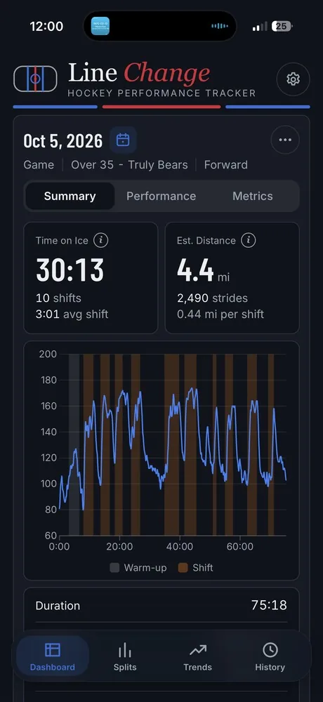
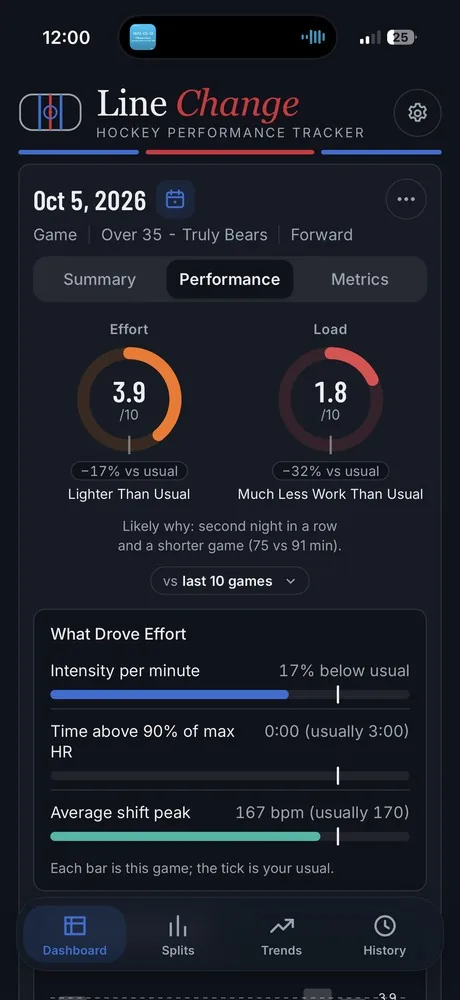
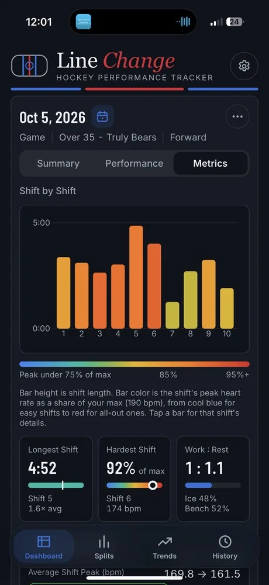
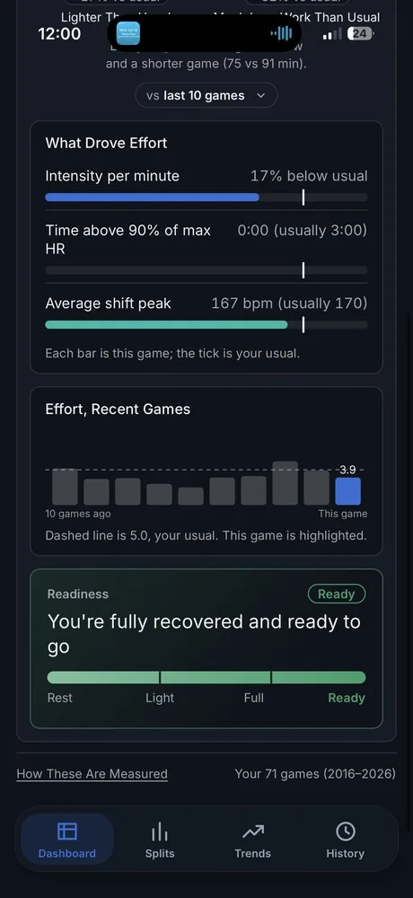
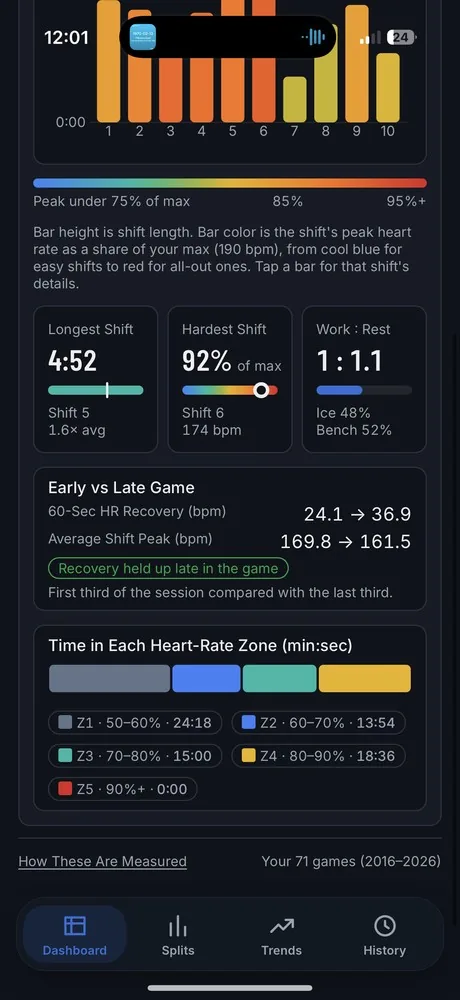

Passion project · Designed and built · iPhone, Apple Watch & web
I play adult league hockey and wanted to track my stats like the pros, but no app could tell me how a game actually went. So I designed and built one. Line Change reads heart rate from a chest strap or watch and turns it into shifts, time on ice, effort and recovery.

Role
Sole designer and developer
Platforms
iPhone, Apple Watch, web
Data sources
Polar H10 and Verity, Polar watches, Apple Health
Tested on
My own 71 games, 2016–2026
Fitness apps treat a hockey game as one long workout. An average heart rate over 75 minutes hides what matters: how many shifts you took, how hard you went on each, and whether you faded late.
Rinks have no GPS and a strap has no idea when you're on the ice. The only signal is heart rate. The design question: how do you turn one noisy signal into stats a player trusts?
Every screen is built on four steps, each one shown to the player rather than hidden.
01 · Capture
From a chest strap, watch or Apple Health.
02 · Detect
Inferred from heart-rate rises and recoveries, with warm-up separated out.
03 · Estimate
Time on ice, distance, strides, effort and load.
04 · Compare
Your last 10, 20 or 50 games, or all of them.

01
A 3.9 effort score means nothing alone. So every score shows how it compares with your usual ("−17% vs usual"), a plain label ("Lighter Than Usual") and a likely reason: "second night in a row and a shorter game."
"What Drove Effort" breaks the score into its parts, and every chart carries a one-line caption: "Each bar is this game; the tick is your usual."
Tradeoff: More words on screen, in exchange for numbers nobody has to decode.
02
In the shift-by-shift chart, bar height is how long the shift lasted and bar color is how hard it was: peak heart rate as a share of your max, from cool blue to red. A player sees at a glance that shift 5 was long, but shift 6 was the hardest.
Three summary cards below pull out the answers people ask first: longest shift, hardest shift and work-to-rest ratio.
Tradeoff: Color carries meaning, so the scale is always labeled directly under the chart.

03
Without GPS, distance is a model, not a measurement. It's labeled "Est. Distance" and documented as roughly ±20%: good for comparing your own games, not for bragging rights. Info buttons and a "How These Are Measured" page explain every number.
The heart-rate trace shows its work, too: warm-up is shaded gray and each detected shift is shaded in, so players can check the app's reading against what they remember.
Tradeoff: Admitting uncertainty makes numbers look less impressive, but more trustworthy.
A low score isn't a failure. A red effort ring means "a light night, not a bad one," and the readiness bar ends on "Ready," not on a grade.


Building it myself meant every design decision met real data right away. But the biggest changes came from testing with my teammates. Their feedback reshaped the entire dashboard’s look and feel, how settings are configured, and which numbers show up first.
Next case study
Rebuilding How Investors Navigate Nasdaq.com